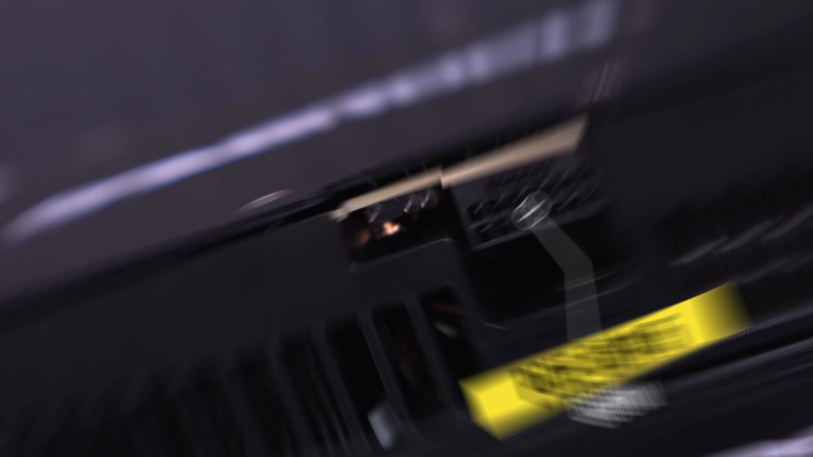
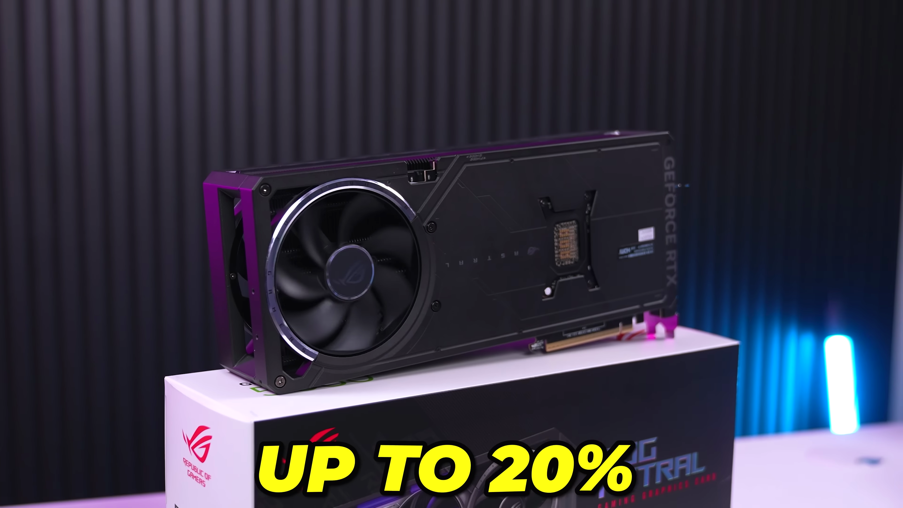
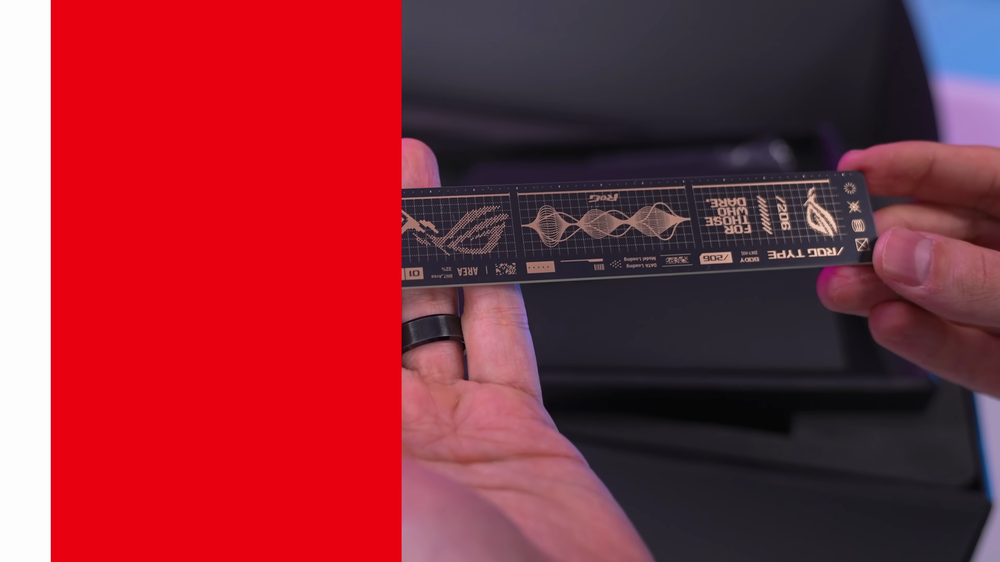
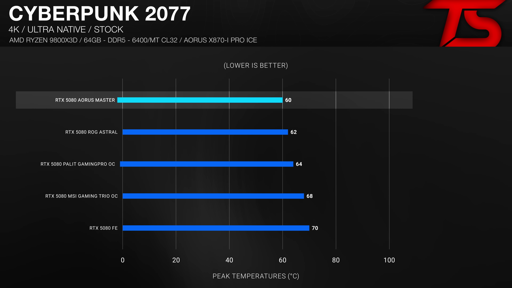

이 블로그 포스트에서는 최신 ROG Astrol 그래픽 카드를 비롯하여 다양한 50 시리즈 카드들의 성능을 분석해보겠습니다. 각각의 카드는 디자인, 가격, 성능 등 여러 측면에서 어떤 특성을 가졌는지, 어떤 점이 찬사를 받거나 비난받는지를 조명할 것입니다. 첫 단계로 해당 카드들의 스펙 및 디자인을 살펴보고, 이후 실제 게임 성능을 채점해 보겠습니다. 
이전 시리즈와의 차별성
- 최신의 HDMI 2.1 포트와 DisplayPort 2.1
각 카드에는 최신 HDMI 2.1B 포트와 3개의 DisplayPort 2.1B 포트가 탑재되어, 4K 해상도에서 480Hz 또는 8K 해상도에서 165Hz를 지원합니다.
ROG Astrol - 플래그십 모델
- ROG Astrol은 50 시리즈 중 가장 비싸고 성능이 뛰어난 GPU
- 3.8 슬롯 카드이자 쿼드 팬 시스템 탑재
ROG의 플래그십 모델인 Astrol은 다채로운 성능을 자랑하며, 새로운 디자인이 이전의 색상 조합보다 훨씬 매력적입니다.

열관리와 성능
- Quad 팬으로 20%의 공기 흐름 효과
- 80A MOSFET으로 35%의 여유 전력
Astrol의 팬 구조는 열 관리를 위한 디자인 개선에 중점을 두고 있으며, 성능을 최대화합니다.

가격과 성능의 관계
- 가장 비싼 RTX 5080, MSRP $1,500
- 성능으로 가격을 정당화해야 함
높은 가격에도 불구하고, 성능이 이를 정당화해야 고객의 구입 의욕을 불러일으킬 것입니다.

디자인 변화
- 오랜만에 색상 조합 개선
- 소음 수준이 낮은 조용한 모드 सहित 다양한 BIOS 모드
디자인 선택에서 비록 RGB 조명이 추가되기는 했지만, 색상 조합이 훨씬 세련되게 바뀌었습니다.

상품 패키징
- 케이블 어댑터와 데코 키캡이 포함된 기본 패키지
- 기타 부가 악세서리
Astrol 패키지는 룰러와 같은 흥미로운 액세서리를 포함하고 있어, 전체적인 점검을 쉽게 도와줍니다.

오버클로킹과 성능 향상
- 팻도르다에서 최대 10% 성능 향상
- 비교적 온도 저렴하면서 높은 성능
게임 성능이 오버클로킹에 따라 기하급수적으로 증가하며, 특히 성능 멀티플을 높일 수 있는 기회입니다.

소음과 열 성능
- 최고의 성능 카드에서 낮은 소음 수준
- 고온 테스트의 최강자 찾기
다양한 테스트를 통해 보여준 온도, 성능, 소음 측면에서 각 카드의 성능이 판가름 나게 됩니다.

결론 및 추천
- ROG Astrol의 성능과 가격의 상대적 가치 비교
- 사용자 개별 취향의 중요성 강조
결국 개인의 필요와 선호도에 따라 최적의 카드가 달라질 것이며, 각자의 상황에 맞는 결정을 내리는 것이 중요함을 강조하겠습니다.
Tags: #ROG Astrol #RTX 5080 #50 시리즈 카드 #그래픽 카드 비교 #오버클로킹 #게임 성능 #디자인 #가격대 성능비 #열 관리 #소음 #비교 분석